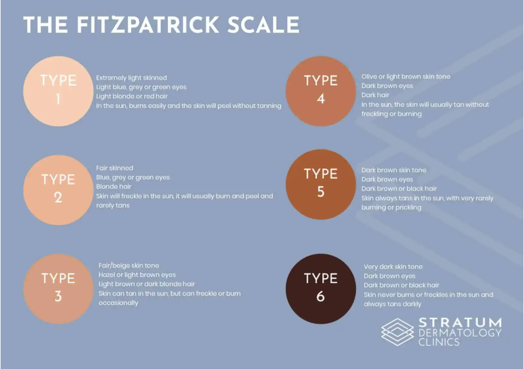

<!DOCTYPE html>
<html lang="en">
  <head>
    <meta charset="UTF-8" />
    <meta name="viewport" content="width=device-width, initial-scale=1.0" />
    <meta http-equiv="X-UA-Compatible" content="ie=edge" />
    <title>HTML + CSS</title>
    <link rel="stylesheet" href="another.css" />
    <link
      href="https://fonts.googleapis.com/css2?family=Poppins&display=swap"
      rel="stylesheet"
    />
  </head>
</html>
<body>
  <div class="skin types">
    <h1>Skin varies depending on multiple factors</h1>
    <p>Normal Skin: Balanced skin that's not too oily or dry.</p>
    <p>
      Dry Skin: Skin that lacks moisture, often feeling tight,flaky or rough
    </p>
    <p>
      Oily Skin: Skin that produces excess oil, often appearing shiny or greasy.
    </p>
    <p>
      Combination Skin: Skin that's oily in some areas(like the T-zone) and
      normal or dry in others
    </p>
    <p> Sensitive skin: Skin that's easily irritated by products or 
      environmental factors. </p>
      <p> Acne-Prone Skin: Skin that's prone to breakouts and acne. 
    
    <a href="innerCare.html"> <button>X</button> </a>
  </div>
</body>
<style>
    h1{color:#344966}
    .skin types{background-color: #feeafa;}
    body {font-family: Poppins, Helvetica, sans-serif;}
